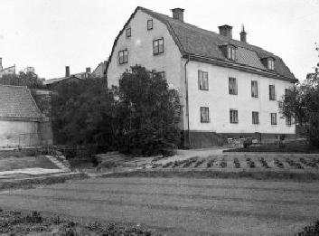
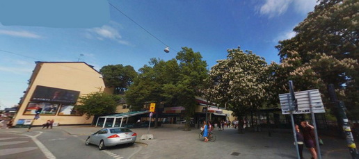
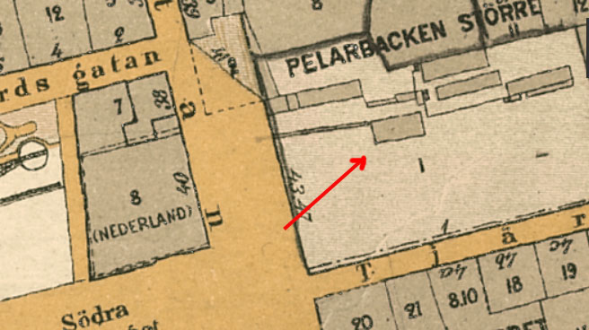
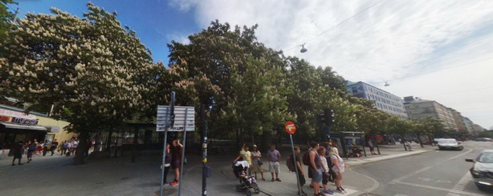
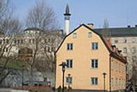
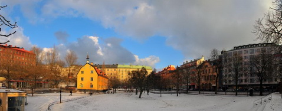

|
 10. Bilden tagen 1918. Götgatan 43-47, Tjärhovs- gatan 1 (Björns trädgård) kv Pelarbacken Större Björns trädgård
Björns trädgård är en trevlig park i lite mindre skala som ligger vid Götgatan mittemot Medborgarplatsen på Södermalm. Runt omkring Björns trädgård finns bland annat Stockholms moské och huset som kallas för ”Söderslottet”. Björns trädgård har en hel del år på nacken och är idag ett tips för barnfamiljen som är ute efter en härlig dag med roliga aktiviteter där barnen kan få utlopp för sin energi.
Runt om i parken kan man se rester från Björns malmgård. För det var nämligen på 1640-talet som en viss Hans Weyler blev ägare till tomten som idag kallas för Björns trädgård. Senare tog en man vid namn Kristian Osthoff över egendomen och lät påbörja egendomens byggnad. Då fanns endast en undervåning. Näste ägare, Fredrik Holmgren lät bygga ännu en våning. Därefter kom trädgårdsmästareåldermannen Sven Bergqvist att ta över Björns trädgård och han hade en dräng som hette just Carl Gustav Björn. Han gifte sig sedan med en av Bergqvists döttrar och jobbade även han som trädgårdsmästare och kunde sedan ta över egendomen efter svärfaderns bortgång.
Paret Björn fick en son, Karl Fredrik Björn, som studerade i Uppsala vid Karolinska Institutet. Han utvecklade ett alldeles särskilt intresse för just botanik och i och med detta valde han att anlägga en botanisk mönsterträdgård. Karl Fredrik Björn är också känd efter sin bortgång 1915 som en donator som testamenterade sin förmögenhet till ett antal välkända institutioner så som till exempel Röda Korset, Kungliga Teatern och Uppsala universitets botaniska trädgård.
Således har Björns trädgård en väldigt spännande och anrik historia och idag kan man besöka trädgården som har blivit en traditionell lekpark.
Björns trädgård sedd från söder
 Ur Tjerneld, Stockholmsliv, del II, 1950 Pelarbacken Nordost om Södra Bantorget ligger en höjd, som nu ingår som en grönskande sluttning i parken Björns trädgård, men som förr var betydligt mera markerad, allrahelst som den fram till 1882 kröntes av kvarnen »Finskan». Det var den gamla Pelarbacken, vilken sedan medeltiden flankerat utfartsvägen söderut. |

 Norrifrån  Från moskén mot sydväst. Tjärhovsgatan i bakgrunden.
 Från Medborgarplatsen. Foto Jan Öhrström
Ännu kring sekelskiftet var det något mystiskt över Pelarbacken, dels visste man att
den varit avrättningsplats innan på 1500-talet Justitieberget eller
Erstaberget, som det nu kallas, togs i bruk, dels stod den så kallade
Käpplingestenen alldeles på branten över Götgatan. Många olika uppgifter cirkulerade om stenens härkomst, men det är nog nu fastslaget, att den och de andra två stenarna som från början fanns på
platsen ingenting hade med Käpplingemorden att göra, utan utmärkte medeltidens Via Dolorosa till Calvarieberget. Sådana stenar
blev vanliga på 1400-talet och återfinns på många håll i Europa.Dessa tre raserades så småningom, men en av dem återfanns i slutet
av 1700-talet av en mjölnare som reste upp den. Nu har museimän
tagit hand om stenen på Pelarbacken.
På krönet av bergsklacken står några hyreshus, som har ovanligt
vacker utsikt och enligt uppgift lär vara uppförda av en av de första
bostadsföreningarna i Stockholm. Björns trädgård Parken vid Pelarbacken kallas som nämnts Björns trädgård och därmed har ett gammalt välkänt Södernamn bevarats. Den Björn som givit namn åt platsen är också värd all aktning. Han hette Carl Gustaf Björn och kom på 1890-talet som dräng till trädgårdsmästare Sven Bergqvist vid Götgatan, gifte sig efter tolv år med äldsta dottern, köpte egendomen då svärfadern dog 1858 och etablerade en handelsträdgård, som blev mycket uppskattad i trakten. Ett högt, mörkrött plank inhägnade fruktträden och grönsakslanden, som sträckte sig efter hela Tjärhovsgatan fram till Tullportsgatan, nuvarande Östgötagatan. Blommor och grönsaker såldes i ett litet gulvitt envåningshus mitt för Lillienhoffska huset och i en annan byggnad, som står kvar i den moderna parken, satt på nedre botten dalkullor och småländskor och band kransar. Den duktige Björn hade även flera växthus och eftersom han var en ansedd borgare vid borgarnas gata Götgatan - trots att han drev upp morötter och palsternackor istället för att göra peruker eller höga hattar - blev han stadsfullmäktig. |
{kind=link}
{kind=link}
{kind=link}
{kind=link}
{kind=link}